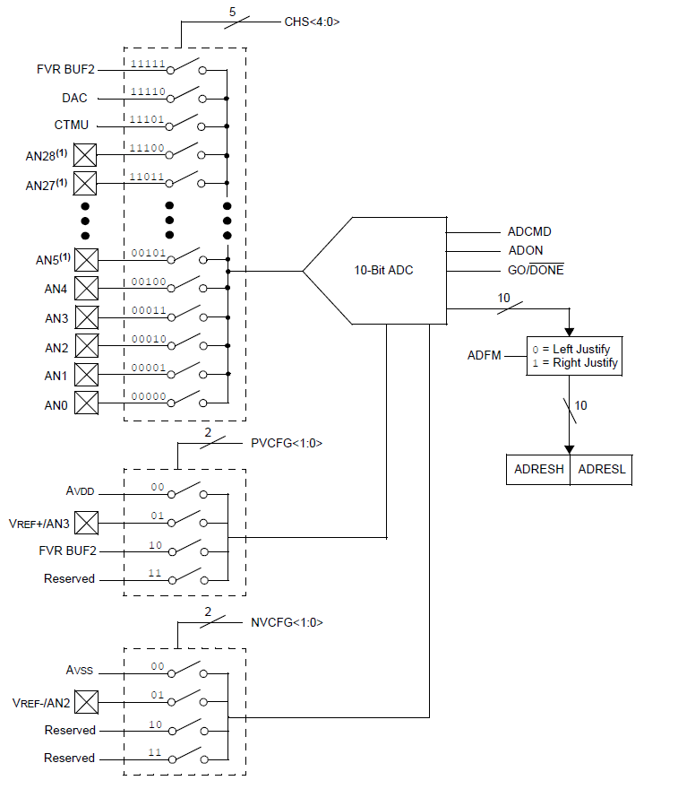
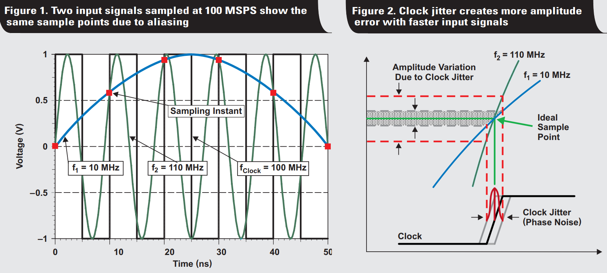

| Lecture: | 20 |
| Objective: | To cover the particular attrivbutes of
the PIC microcontrollers ADC interface and enable students
to write code to acquire digitized data. |
PIC ADC interface
If you are using the ADC subsystem of the PIC you will need to feed
your analog signals into one of the ANx pins. Inside the ADC the
successive approximation register (SAR) performs the actual conversion
of the analog value into the converted value. Like many other
microcontrollers, the PIC has a single 10-bit SAR, so there
is a analog mux on the front-end of the SAR to select one of the analog
signal to quantize. When I say
10-bit SAR, I am telling you how
many bits the SAR uses to quantize the analog input. 10-bit outputs
from the SAR are stored in a pair of 8-bit registers, ADRESH:ADRESL
The 10-bit value can be either left or right justifies inside the
16 available bits. We will typically left justify the ADC result so
that we can access the 8 most significant bits by reading ADRESH; we
will just ignore the least significant 2-bits in ADRESL.
Every ADC conversion starts by the user program setting the
ADCON0bits.GO_nDONE bit. This bit will stay at logic 1 until the
conversion is complete when the bit will be cleared. Putting
together these concepts yields the following code snippet that
will convert
ADCON0bits.GO_nDONE = 1;
while (ADCON0bits.GO_nDONE == 1);
x = ADRESH;

| Field | Function
|
| ADON | Turns ADC subsystem on and off
|
| GO_nDONE | Starts a conversion and flags when its complete
|
| CHS | Selects the channel/pin to be converted
|
| ADFM | Select left or right result justify
|
| PVCFG | Selects positive voltage reference for ADC
|
| NVCFG | Selects negative voltage reference for ADC
|
Clock Jitter
A common application for analog to digital converters is to sample
a signal and store the digitized signal for further analysis or
reproduction through a digital to analog converter. In order to
do this, the input waveform is sampled at some period rate called
the sampling rate. In an ideal world, the input signal would be
sampled at exactly the sampling rate, but in the real world there
will be some clock jitter - small variations in the sampling rate.
Clock jitter creates noise in the quantized amplitude of the input
waveform.
In the figure below left, two input waveforms (blue at 10MHz and
green at 110MHz) are being sampled at 100Mhz (referenced by the
black clock signal). The figure below right shows when these two
input waveforms are sampled when there is variation/jitter in the
rising edge of the sampling clock. Now there is an interval of time
when the input waveforms could be converted, resulting in different
converted values. The range of potential converted values is larger
for the higher frequency waveform.

Adapted from "Clock jitter analyzed in the time domain, Part 1" By
Thomas Neu. Texas Instruments Incorperated notes on Data Acquisition.
The upshot of this is that if we are sampling a signal, then we
need to carefully consider the stability of our sampling rate
a a part of our noise analysis. We will dive into the topic of
noise.
Test your understanding
You can find the solutions embedded in the "source code" for this
web page by right mouse clicking on this web page and selecting
"view source". The solutions are in HTML comments.
- A 10MHz 2v (peak to peak) sinusoidal input is applied to a 16-bit
ADC that is sampling the input signal at 100MHz. What is the largest change
in the input between consecutive samples? In other words, how much
does this input voltage change between two samples correspond to change
in the 16-bit output between those two input if the ADC is referenced
to 3.3v and GND.
- Clock jitter causes deviations in the sampling clock rate.
If our sampling clock deviated by ±10ps, how much difference
could this make to the input values of a 10MHz 2v (peak to peak)
sinusoidal input sampled at 100MHz. How much could the jitter
effect the converted output from the ADC for a single sample?